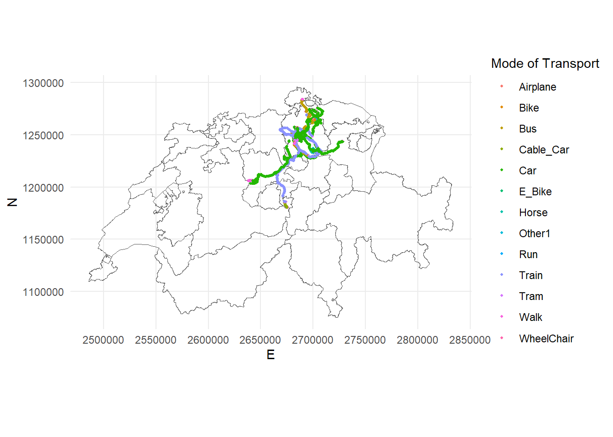
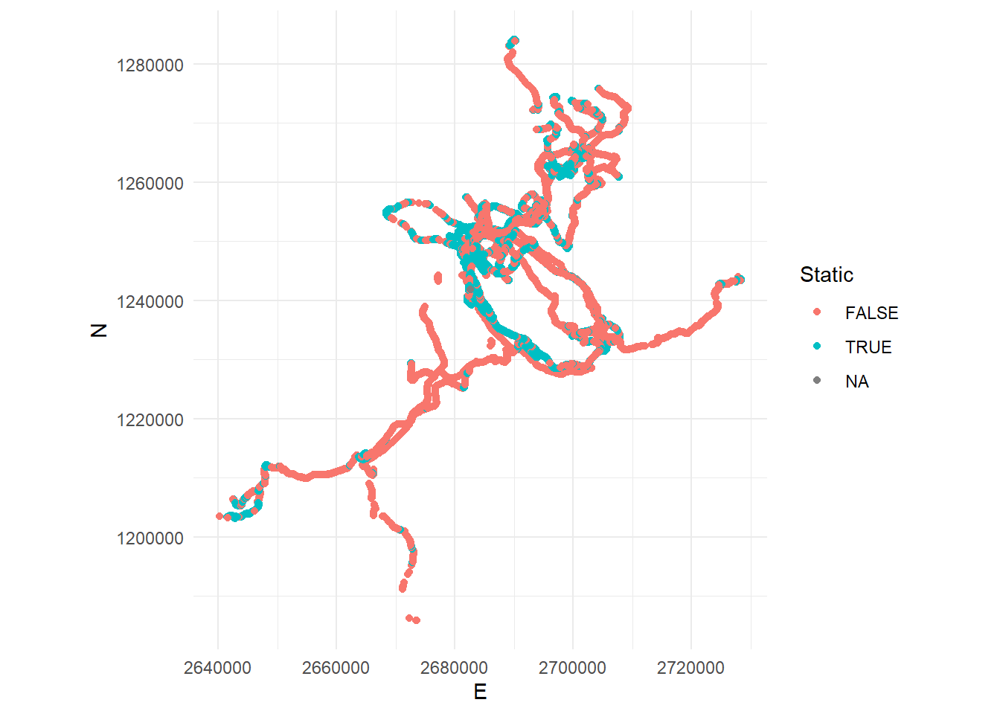
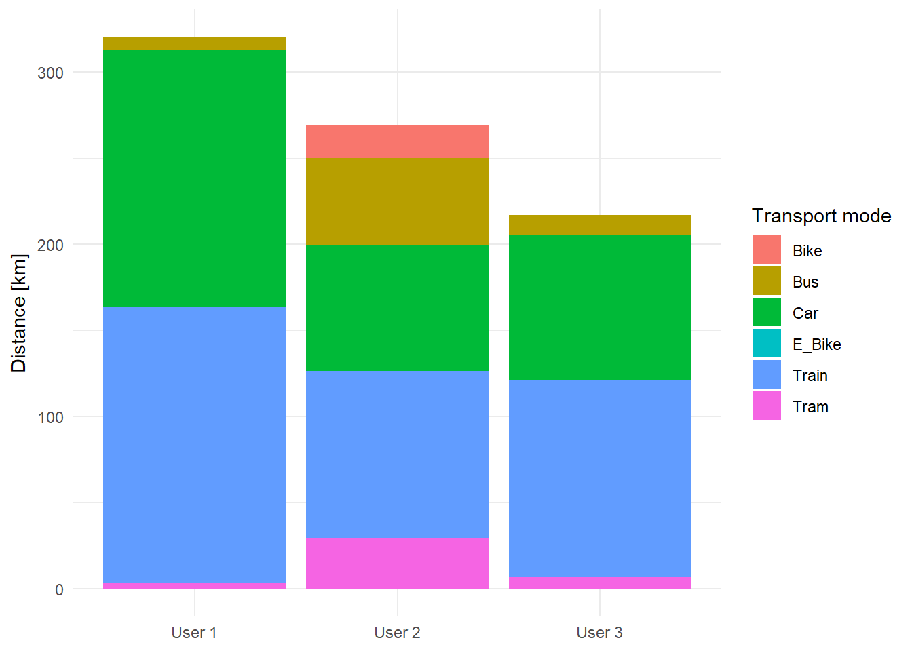
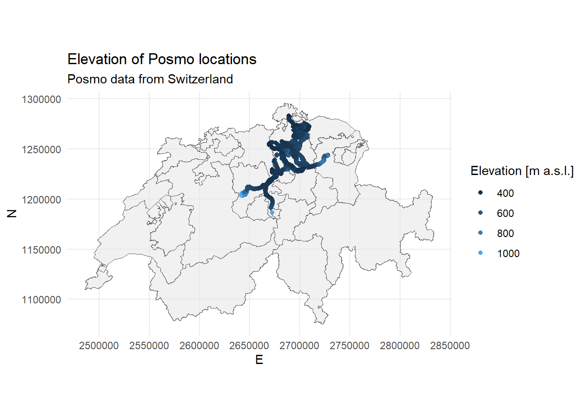
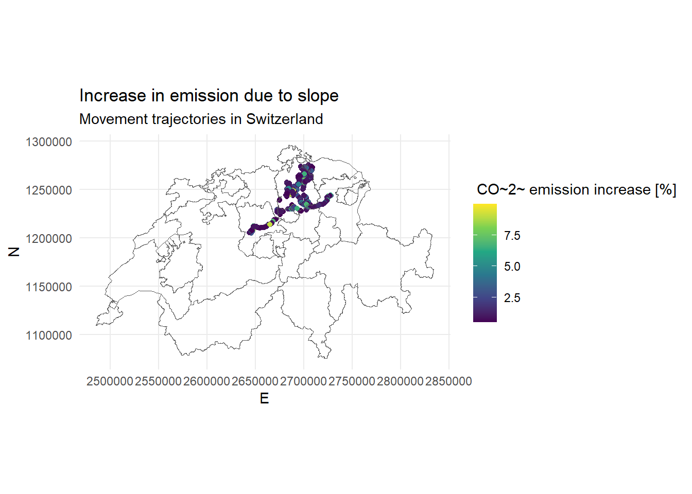
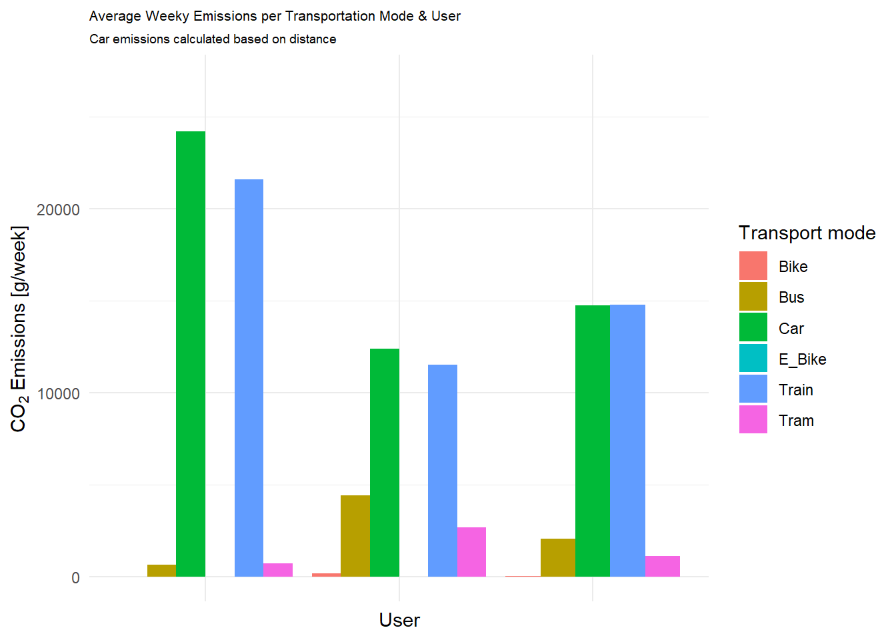
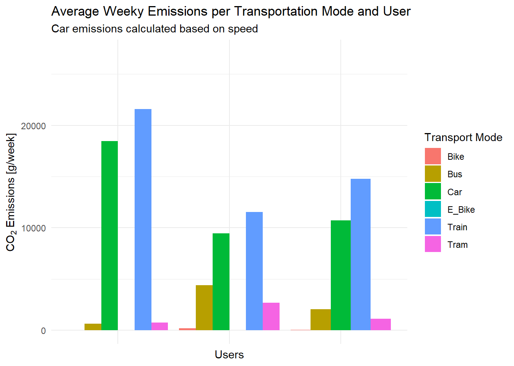
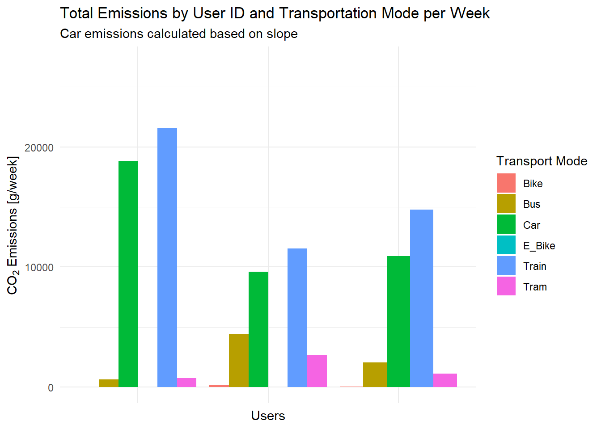
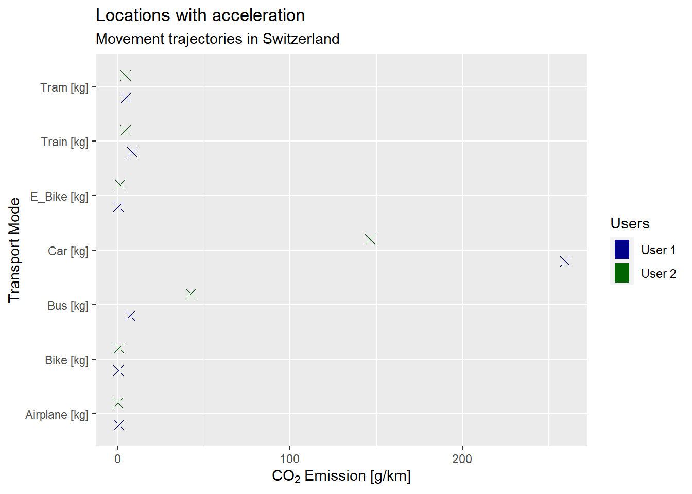
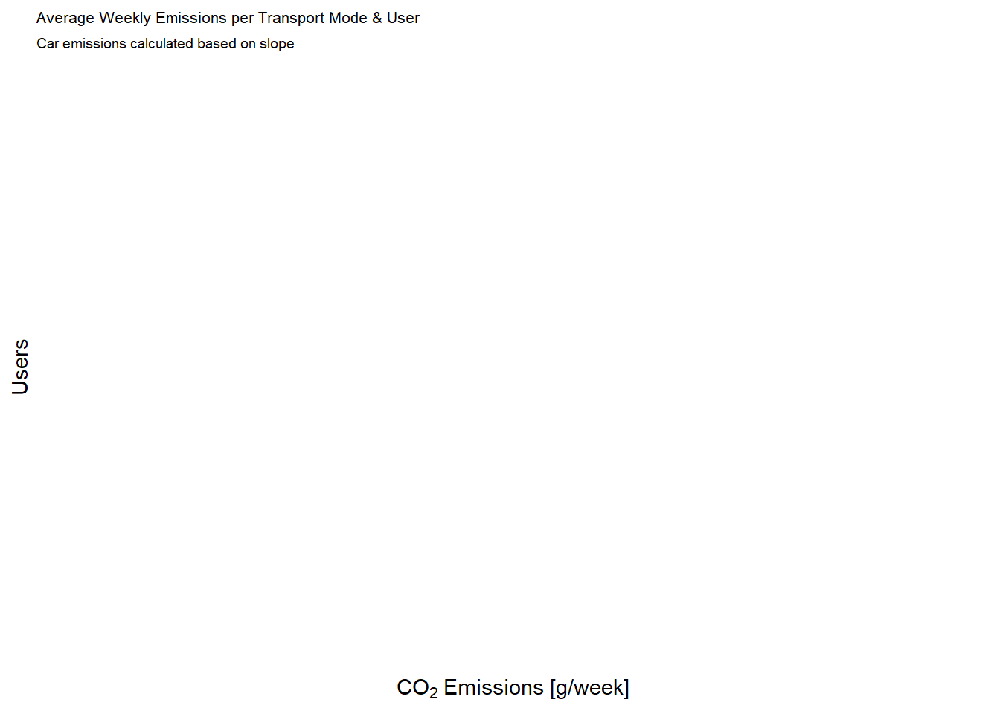

Code
# Preliminaries
# Import libraries
library("dplyr")
library("ggplot2")
library("gridExtra")
library("lubridate")
library("readr")
library("raster")
library("sf")
library("terra")GEO880 - Computational Movment Analysis (UZH) / Patterns and Trends in Environmental Data (ZHAW)
# Preliminaries
# Import libraries
library("dplyr")
library("ggplot2")
library("gridExtra")
library("lubridate")
library("readr")
library("raster")
library("sf")
library("terra")Mobility is an important source for carbon dioxide emission whereas road transportation is responsible for around 20 percent of global carbon dioxide emissions. Using movement data from Posmo we determined the emissions based on approaches with increasing complexities. Thereby we used 3 different validated data sets. There are significant differences in the calculations of carbon emissions depending on the complexity of the approach. In our assessement an increased complexity lead to decreased emissions. Our study revealed that the calculation of emissions depends on many variables and factors which are difficult to include in a holistic analysis.
Road transportation is responsible for around 20 percent of global carbon dioxide emission whereof almost half of these emissions are caused by passenger road vehicles (Suarez et al., 2022). Due to the strongly negative impact of carbon dioxide emissions on climate change, they world widely receive gradually increasing concern (Dong et al., 2022). Driving behavior like acceleration as well as terrain characteristics such as an incline have valid impacts on carbon dioxide emissions (Dong et al., 2022; Suarez et al., 2022; Xu et al., 2022). However, road traffic is not the only type of traffic that causes carbon dioxide emissions. Trains, trams, and – when also taking production emissions into account – even bicycles cause carbon dioxide emissions. Therefore, we will also take these transportation modes into account. In this project, we analyze carbon dioxide emissions by different transportation types using different complexity levels as well as emission scenarios and compare these different setups with each other. We use validated movement data collected by the Posmo app from 3 students of the course Computational Movement Analysis in Spring 2023 at ZHAW. The objective of this report is to determine the weekly average emissions per person for each transportation mode. Thereby, we additionally want to analyse how much the complexity of an approach changes the results for carbon emissions calculations. Furthermore, we compare the results of our calculation with the emissions provided by Posmo and assess the differences for each transportation mode.
For the analysis of the emissions, we included Posmo data from a data pool provided in the course. As the exact used transportation mode is crucial in our assessment we only included data sets which were validated, which reduced the included data sets to three. Finally, our data set includes 111’253 data points with the following attributes: - user_id - datetime - weekday - transport_mode - lon_x - lat_y The Posmo data has different temporal time spans for the different people. Data set 1 spans from April 1st to May 11th 2023, data set 2 from April 6th to June 11th and data set 3 from April 11th to June 16th 2023. The temporal resolution of our tracking data varies between 5 and 15 seconds.
Pre-processing was needed to be able to use our data set for the further analysis. We decided to reduce our assessment area to Switzerland. First, our emission data is mostly based on Swiss and German data and differences in emissions in other countries are possible. Second, we included a slope analysis which would have been too expensive to calculate for multiple countries. The outlines of Switzerland were pre-processed using QGIS. We only included transportation modes which generate carbon dioxide emissions. We do not include airplanes in our considerations as we are only going to focus on trajectories in Switzerland. Finally, we included in our analysis car, bus, train, tram as well as e-bikes and bikes as they produce carbon emissions when taking the production process into account. Additionally, we removed all static points as we are interested in the emissions of moving vehicles. We thereby considered a threshold of 215m. The average velocity of a bicycle is 12.8 km/h (BFS & ARE, 2023). With an assumed average tracking cycle of 10 seconds this would correspond with a distance of around 215 meters which a bicycle could drive in 60 seconds (moving window includes 6 time stamps). We filtered velocities which exceeded 200 km/h, which is the highest velocities some InterCity trains in Switzerland travel (Knupfer, 2014). We also set the minimum speed to 10 as this corresponds with the average velocity of our slowest transportation mode, bicycle.
Furthermore, we excluded all slopes which are steeper than 25%, which corresponds to 14.4° as the steepest mountain pass slope in Switzerland is around this value (Wikipedia, 2022).
# define a function to load the posmo data
loadPosmoData <- function(filepath){
read_delim(filepath, delim = ",") |>
# remove the place name
subset(select = -c(place_name)) |>
# remove NA values for transport mode, we need a specified transport mode
filter(!is.na(transport_mode))
}
# load all validated Posmo track files
posmo1 <- loadPosmoData("data/posmo_tracks/posmo_1.csv") # our own data
posmo2 <- loadPosmoData("data/posmo_tracks/posmo_2.csv") # our own data
posmo3 <- loadPosmoData("data/posmo_tracks/posmo_3.csv") # Posmo data tracking pool
posmo <- full_join(posmo1, posmo2)
posmo <- full_join(posmo, posmo3)
# remove rows with NA in the coordinates
posmo <- posmo[!is.na(posmo$lon_x), ]
# convert to sf object and transform to LV95
posmo <- st_as_sf(posmo, coords = c("lon_x", "lat_y"), crs = 4326) |>
st_transform(2056)
# extract coordinates
posmo_coord <- st_coordinates(posmo)
# create one dataframe
posmo <- cbind(posmo, posmo_coord)
# read Switzerland and the cantons
CH_boundaries <- st_read("data/swissboundaries3D/CH_boundaries.gpkg", crs = 2056)
CH_cantons <- st_read("data/swissboundaries3D/CH_cantons.gpkg", crs = 2056)
# filter points that are within Switzerland
posmo <- st_filter(posmo, CH_boundaries)# check if it worked
ggplot() +
geom_sf(data = CH_cantons, alpha = 0) +
geom_sf(data = posmo, aes(color = transport_mode), size = 0.8) +
coord_sf(datum = st_crs(2056)) +
labs(x = "E",
y = "N",
title = "Posmo tracks in Switzerland") +
guides(color = guide_legend(title = "Transport Mode"))+
theme_minimal()
# get all the transportation modes
unique(posmo$transport_mode)
# save transportation modes we need in a vector
transport_modes = c("Car", "Bus", "Train", "Tram", "Bike", "E_Bike")
# filter to only the transportation modes we need
posmo <- posmo |>
filter(transport_mode %in% transport_modes)# functions to determine moving window
movingWindowLag <- function(E, N, n){
sqrt((lag(E, n) - E)^2 + (lag(N, n) - N)^2)
}
movingWindowLead <- function(E, N, n){
sqrt((E - lead(E, n))^2 + (N - lead(N, n))^2)
}
# calculate moving window
posmo <- posmo |>
mutate(
minus3 = movingWindowLag(X, Y, 3),
minus2 = movingWindowLag(X, Y, 2),
minus1 = movingWindowLag(X, Y, 1),
plus1 = movingWindowLead(X, Y, 1),
plus2 = movingWindowLead(X, Y, 2),
plus3 = movingWindowLead(X, Y, 3)
)
# calculate the mean step length
posmo <- posmo |>
rowwise() |>
mutate(
stepMean = mean(c(minus3, minus2, minus1, plus1, plus2, plus3))
) |>
ungroup()
# define a column 'static'
posmo <- posmo |>
ungroup() |>
mutate(static = stepMean < 215)# plot whether trajectories are static or not
posmo |>
ggplot(aes(X,Y)) +
geom_point(aes(colour = static)) +
coord_fixed()+
labs(x = "E",
y = "N",
title = "Static and non-static points in the trajectories",
color = "Static")+
theme_minimal()
# remove static points
posmo <- posmo |>
filter(!static)
# read the raster data using the terra package
dhm25 <- terra::rast("data/DHM25/dhm25_grid_raster.asc")
# set the raster crs to LV03
crs(dhm25) <- terra::crs("+init=EPSG:21781")
# convert Posmo data to LV03 to match the CRS of the DHM25
posmo_lv03 <- posmo |>
st_transform(crs = 21781) |>
subset(select = -c(X, Y))
# extract the height information for each Posmo location
height_dhm <- extract(dhm25, posmo_lv03)
# join the height back to the posmo data
posmo$height <- height_dhm$dhm25_grid_rasterTo calculate the emissions we first had to determine values for the carbon dioxide emissions for the considered transportation means. As they strongly vary depending on the sources we included multiple values for some of the transportation modes. To calculate our weekly emission we determined the average value of the collected emission values for each transportation mode and multiplied it with the distance. As the time period when people collected Posmo data does not correspond we needed to normalize the emission values for each person to determine the 7-days average. In order to determine the influence of the complexity of an approach we also considered other factors such as the effect of velocity or slope on the carbon emissions. These additional factors were only calculated and compared for the emissions of cars as this is the transportat mode that each can control a lot themselves when driving as compared to when travelling in a train or bus for example.
Speed
Information about the change in car emission for velocities between 100 and 130 km/h were provided by the Umweltbundesamt (n.d.). To estimate the emission for lower velocities we used a non-linear least squares regression. We assumed that the reduction in carbon emissions decreases at lower velocities and therefore set a threshold at 75 km/h where the carbon emissions are constant (Metcalfe & Boulter, 2022).
Slope
For calculating the increase in carbon dioxide emission due to inclination when driving, we used the reference values from Xu et al. (2020). In their paper, they measured emissions based on inclination and speed for two different vehicles, a small and a large one. Therefore, in a first step, we calculated the average of these two vehicle types. We then fit a linear model for each 10 km/h speed that calculates the emission increase in percentage based on a certain road inclination for the respective speed category. With these linear models, we calculated the increase in emission for each of our Posmo data points. All the increases at each Posmo data point were then summed up for one user ID and divided by the total number of observations per user. This way we got the mean increase in car carbon dioxide emission per user due to inclination. We only considered an increase in emission when passing a positive slope. We did not include potential reductions in emissions when going downhill.
# for cars: we have various sources
c_car <- c(130, 162, 122.3, 200)
# for buses
c_bus <- c(42, 108, 88.7, 25.15)
# for trains
c_train <- c(93, 110.9)
# for trams
c_tram <- c(80, 37)
# for e-bikes
c_ebike <- 14
# for bikes
c_bike <- 8
# create a look-up table for the different emission constants
constants_emission <- data.frame(
transport_mode = transport_modes,
stringsAsFactors = FALSE
)
# include values for emissions and calculate mean, median, minimum and maximum
constants_emission$constant_gkm <- list(c_car, c_bus, c_train, c_tram, c_bike, c_ebike)
constants_emission <- constants_emission |>
mutate(
avg = sapply(constant_gkm, mean),
med = sapply(constant_gkm, median),
min = sapply(constant_gkm, min),
max = sapply(constant_gkm, max)
)brauchen wir get_days function oder eigentlich nur get_weeks?? könnte man Funktion umschreiben? Wir bräuchten nur get_weeks. Habe es versucht, hat auf die schnelle nicht geklappt.
# define a function to get the number of weekdays recorded per user id
get_days <- function(user, posmo_data){
# filter the user
posmo_user <- posmo_data |>
filter(user_id == user)
# convert the datetime format to days and get the unique days
recorded_days <- unique(as.Date(posmo_user$datetime, format = "%d"))
# return the number of unique days
return(length(recorded_days))
}
# save the unique user_ids in the data set
posmo_userids <- unique(posmo$user_id)
# make an empty data frame with the number of days per users
posmo_days_per_user <- data.frame(user_id = posmo_userids)
# create an empty vector to append
number_of_days = c()
number_of_weeks = c()
# use the created function
for (i in posmo_userids){
day = get_days(i, posmo)
number_of_days <- append(number_of_days, day)
week = day/7
number_of_weeks <- append(number_of_weeks, week)
}
# add the number of days and weeks rounded to 3 digits to the user_id
posmo_days_per_user$days <- number_of_days
posmo_days_per_user$weeks <- round(number_of_weeks, 3)# calculate the distances [m], the timelag [s], the speed [m/s], and the speed [km/h]: use group_by to make sure it only calculates for one user id and not between different user ids
posmo <- posmo |>
group_by(user_id)|>
mutate(
distance_m = sqrt((lead(X, 1) - X)^2 + (lead(Y, 1) - Y)^2),
distance_km = distance_m/1000,
timelag_s = as.integer(difftime(lead(datetime), datetime),
units = "secs"),
speed_ms = (distance_m/timelag_s),
speed_kmh = (speed_ms*3.6),
speed_change_ms = lead(speed_ms, 1) - speed_ms,
acceleration_ms2 = speed_change_ms/timelag_s,
acceleration = acceleration_ms2 >=0
) |>
ungroup()
# remove NA distance values
posmo <- posmo |>
filter(!is.na(distance_km))
# group by user_id and transport_mode and sum up the distance in km
posmo_traveldistance <-
posmo |>
group_by(user_id, transport_mode) |>
summarise(sum_km = sum(distance_km))
# join the lookup table to the initial data frame
posmo_traveldistance <- posmo_traveldistance |>
left_join(constants_emission, by = "transport_mode")
# join the number of recording days to the data frame
posmo_traveldistance <- posmo_traveldistance |>
left_join(posmo_days_per_user, by = "user_id")
# multiply the CO2 emissions constant with the traveled distance and divide by the number of recorded days
posmo_traveldistance <- posmo_traveldistance |>
mutate(co2_emissions_g = sum_km * avg,
co2_emissions_g_per_d = co2_emissions_g/days,
co2_emissions_g_per_w = co2_emissions_g/weeks)
# calculate the total emissions by user ID and transportation mode
emissions <- aggregate(co2_emissions_g_per_w ~ user_id + transport_mode, posmo_traveldistance, sum)# remove NA and infinitive values
posmo <- posmo |>
filter(!is.na(speed_kmh)) |>
filter(!is.infinite(speed_kmh))
# check range of speed values
range(posmo$speed_kmh)
posmo <- posmo |>
filter(speed_kmh >= 10) |>
filter(speed_kmh <= 200)
# save speed and their respective emission values [g/km] as variables
speed <- c(100, 110, 120, 130)
emission <- c(146, 158, 172, 190)# fit a non-linear least squares regression
fit_emission <- nls(emission ~ a * exp(b * speed), start = list(a = 100, b = 0.02))
# predicting new estimation values
speed_new <- seq(30, 130, by = 5)
emission_pred_gkm <- predict(fit_emission, newdata = data.frame(speed = speed_new))
# save the new values in a data frame
est_emission_car_speed <- data.frame(speed_new, emission_pred_gkm)# plot the predicted as well as the old values
ggplot()+
geom_point(aes(x = speed_new, y = emission_pred_gkm), color = "blue")+
geom_line(aes(x = speed_new, y = emission_pred_gkm), color = "blue")+
geom_point(aes(x = speed, y = emission), color = "red")+
geom_line(aes(x = speed, y = emission), color = "red")+
labs(title = expression("Estimated CO" ["2"]~ "Emission Values for Cars Depending on Speed"),
subtitle = "Estimated values are in blue, known values are in red.",
x = "Speed [km/h]",
y = expression("CO"["2"] ~ "Emission [g/km]"))+
theme_minimal()
# filter to all cars
posmo_car <- posmo |>
group_by(user_id) |>
filter(transport_mode == "Car") |>
mutate(speed_kmh_floored = floor(speed_kmh/5) * 5) |>
ungroup()
# join the emission values for fast movement (car speed over 75km/h)
posmo_car_fast <- posmo_car |>
group_by(user_id)|>
filter(speed_kmh_floored > 75) |>
left_join(est_emission_car_speed, by = join_by(speed_kmh_floored == speed_new)) |>
ungroup()
# set the emission value for slow movement (car speed under 75km/h)
posmo_car_slow <- posmo_car |>
group_by(user_id)|>
filter(speed_kmh_floored <= 75) |>
mutate(emission_pred_gkm = 116.41017) |>
ungroup()
# combine everything together
posmo_car <- rbind(posmo_car_fast, posmo_car_slow)
# group by user_id to sum up the distance in km
posmo_car_traveldistance <-
posmo_car |>
group_by(user_id, emission_pred_gkm) |>
summarise(sum_km = sum(distance_km)) |>
mutate(emissions_g = sum_km * emission_pred_gkm)
# sum up per user
posmo_car_emissions <- posmo_car_traveldistance |>
group_by(user_id)|>
summarise(sum_emissions_g = sum(emissions_g, na.rm = TRUE))
# join with the number of days & weeks per user
posmo_car_emissions <- posmo_car_emissions |>
left_join(posmo_days_per_user)
# calculate emissions per week
posmo_car_emissions <- posmo_car_emissions |>
group_by(user_id)|>
mutate(co2_emissions_g_per_w = sum_emissions_g/weeks)
# calculate the total emissions by user ID and transportation mode
emissions_car_speed <- aggregate(co2_emissions_g_per_w ~ user_id, posmo_car_emissions, sum)Darstellung eher mit kontinuierlicher Skala anstatt mit einzelnen punkten (falls möglich) Wie ist das gemeint? Höhenwerte für die ganze Schweiz darstellen? Weil wir haben ja nur dort Posmodaten mit Höhe, wo es jetzt Punkte hat. hier habe ich eigentlich gemeint, dass skala nicht punkte ist sondern eher eine kontinuierliche skala mit farbverlauf. so sieht es aus als ob es nur diese 4 höhen gibt
ggplot() +
geom_sf(data = CH_cantons, aes(alpha = 100)) +
geom_sf(data = posmo, aes(color = height)) +
coord_sf(datum = st_crs(2056))+
labs(x = "E",
y = "N",
title = "Elevation of Posmo Locations",
subtitle = "Posmo data from Switzerland") +
guides(color = guide_legend(title = "Elevation [m a.s.l.]"))+
scale_alpha_continuous(guide = "none") +
theme_minimal()
# for all posmo data
posmo_car <- posmo_car |>
group_by(user_id)|>
mutate(
height_diff = lead(height, 1) - height,
horizontal_diff = sqrt((plus1**2)-(height_diff**2)),
slope_percent = (height_diff / horizontal_diff)*100
)|>
ungroup()
# remove all NA values for slope
posmo_car <- posmo_car |>
filter(!is.na(slope_percent))
# print the range of the slope values in percentage
range(posmo_car$slope_percent)
# filter absolute slope values greater than 100%
posmo_car <- posmo_car |>
filter(abs(slope_percent) <= 25)
# check if it worked
range(posmo_car$slope_percent)emissions_slope <- read_delim("data/Emission_Slope.csv", delim = ";") |>
# calculate the absolute increase in carbon emission
mutate(increase_gkm = Emission_slope_gkm - Emission_flat_gkm,
# calculate the relative increase in carbon emission
increase_perc = (increase_gkm/Emission_flat_gkm) * 100)
# get the range of speed in the emission file
range(emissions_slope$Speed_kmh)filterSpeed <- function(dataset, min_speed, max_speed){
dataset |>
filter(Speed_kmh >= min_speed & Speed_kmh <= max_speed)
}
# filter to the three different groups
emissions_slope_slow <- filterSpeed(emissions_slope, 40, 60)
emissions_slope_medium <- filterSpeed(emissions_slope, 70, 90)
emissions_slope_fast <- filterSpeed(emissions_slope, 100, 120)
slopeEmission <- function(slope_data){
slope_data |>
group_by(Speed_kmh, Gradient) |>
mutate(mean_increase_perc = mean(increase_perc))
}
emissions_slope_slow <- slopeEmission(emissions_slope_slow)
emissions_slope_medium <- slopeEmission(emissions_slope_medium)
emissions_slope_fast <- slopeEmission(emissions_slope_fast)
# combine all into one dataframe
emissions_slope <- emissions_slope_slow |>
rbind(emissions_slope_medium, emissions_slope_fast) |>
filter(Vehicle != "Large") |>
subset(select = -c(Vehicle))filterSlope <- function(emission_data, speed_value){
emission_data |>
filter(Speed_kmh == speed_value)
}
# run the function for each speed
slope_50kmh <- filterSlope(emissions_slope, 50)
slope_60kmh <- filterSlope(emissions_slope, 60)
slope_70kmh <- filterSlope(emissions_slope, 70)
slope_80kmh <- filterSlope(emissions_slope, 80)
slope_90kmh <- filterSlope(emissions_slope, 90)
slope_100kmh <- filterSlope(emissions_slope, 100)
slope_120kmh <- filterSlope(emissions_slope, 120)
lm_slope50 <- lm(slope_50kmh$Gradient ~ slope_50kmh$mean_increase_perc)
lm_slope60 <- lm(slope_60kmh$Gradient ~ slope_60kmh$mean_increase_perc)
lm_slope70 <- lm(slope_70kmh$Gradient ~ slope_70kmh$mean_increase_perc)
lm_slope80 <- lm(slope_80kmh$Gradient ~ slope_80kmh$mean_increase_perc)
lm_slope90 <- lm(slope_90kmh$Gradient ~ slope_90kmh$mean_increase_perc)
lm_slope100 <- lm(slope_100kmh$Gradient ~ slope_100kmh$mean_increase_perc)
lm_slope120 <- lm(slope_120kmh$Gradient ~ slope_120kmh$mean_increase_perc)
# create data frame with coefficients for each speed level
extrapolation_slope_emissions <- data.frame(speed_kmh = c(10, 20, 30, 40, 50, 60, 70, 80, 90, 100, 110, 120, 130,
140, 150, 190),
intercept_q = c(0, 0, 0, 0,
lm_slope50$coefficients[1], lm_slope60$coefficients[1],
lm_slope70$coefficients[1], lm_slope80$coefficients[1],
lm_slope90$coefficients[1],lm_slope100$coefficients[1],
(lm_slope100$coefficients[1] +
lm_slope120$coefficients[1])/2,
lm_slope120$coefficients[1],
lm_slope120$coefficients[1], lm_slope120$coefficients[1],
lm_slope120$coefficients[1], lm_slope120$coefficients[1]),
slope_m = c(1, 1, 1, 1,
lm_slope50$coefficients[2], lm_slope60$coefficients[2],
lm_slope70$coefficients[2], lm_slope80$coefficients[2],
lm_slope90$coefficients[2],lm_slope100$coefficients[2],
(lm_slope100$coefficients[2] + lm_slope120$coefficients[2])/2,
lm_slope120$coefficients[2], lm_slope120$coefficients[2],
lm_slope120$coefficients[2], lm_slope120$coefficients[2],
lm_slope120$coefficients[2]))
# round speed values to the nearest 10 to join with extrapolation
posmo_car <- posmo_car |>
mutate(speed_kmh_round = round(speed_kmh, -1))
# join the extrapolation of the emission values with the posmo car data
posmo_car <- posmo_car |>
full_join(extrapolation_slope_emissions, by = c("speed_kmh_round" = "speed_kmh"))# calculate the increase in emission for each data point
posmo_car <- posmo_car |>
filter(slope_percent >=0) |>
mutate(emission_increase_perc = slope_m * slope_percent + intercept_q) |>
filter(emission_increase_perc >= 0)
# count the number of observations per user
observations_user <- posmo_car |>
count(user_id)
posmo_slope_car_increase <- posmo_car|>
group_by(user_id) |>
summarise(sum_increase_perc = sum(emission_increase_perc)) |>
ungroup()
# add the number of observations to the data frame with the slope emissions
posmo_slope_car_increase$observations <- observations_user$n
# get the mean increase for each person's car emission when considering the slope
posmo_slope_car_increase <- posmo_slope_car_increase|>
group_by(user_id) |>
mutate(mean_increase_perc = sum_increase_perc/observations) |>
st_drop_geometry()
# join the car emissions with the increase of emission because of slope
posmo_car_emissions <- posmo_car_emissions |>
left_join(posmo_slope_car_increase, by = "user_id")
emissions_car_slope <- posmo_car_emissions |>
mutate(co2_emissions_g_per_w_slope = co2_emissions_g_per_w * (1 + mean_increase_perc/100))The analysis of the weekly emissions of each user shows that for all free users the car and the train provide the highest emissions. Transportation means such as bus, tram, bike or e-bikes produce only small amounts of emissions. If you assess the distances which were travelled with each transport mean (in discussion)
To assess the influence of increasing complexity for the emission values we focused our analysis solely on car emissions. When comparing the emissions calculated with the simple approach and the emissions calculated with the speed approach it is evident that the speed approach resulted in lower emission values for all users. When also including the emissions calculated using the slope and the resulting increase in carbon emissions the emission values for the speed and the slope approach are quite similar. For User 2 and 3 the emissions are higher with the slope approach than for the speed approach (maybe more hilly??) Figure ?? shows the uncertainty which arises when calculating emission values for different transportation modes. The ranges of emission values are especially high for cars as well as buses which is visible in the increased length of the boxes which indicate the range of the possible emissions. User 1 thereby seems to use the car more often whereas user to seems to prefer taking the bus. The calculated emissions from Posmo and our own calculated emission vary a lot. Especially the calculated car and the train emissions show huge differences. For the car emissions Posmo calculates values which are higher than our values. Even the highest emission values we found in the literature is still rather small compared to the Posmo emissions. In contrast, the train emissions calculated by Posmo are a lot smaller than our own emission values. We determined the weekly emissions of the Posmo and our own calculations. Thereby the emissions calculated with Posmo provide much higher values than our weekly emissions calculated with the slope approach.
evtl stacked barchart –> schaue ich am freitag an
emissions_bar_simple <- ggplot(emissions, aes(x = user_id, y = co2_emissions_g_per_w, fill = transport_mode)) +
geom_bar(stat = "identity", position = "dodge") +
labs(x = "User",
y = expression("CO"["2"]~ "Emissions [g/week]"),
fill = "Transport mode") +
labs(subtitle = "Car emissions calcualted based on distance")+
ggtitle("Average Weeky Emissions per Transportation Mode & User") +
theme_minimal()+
theme(plot.title = element_text(size = 8),
plot.subtitle = element_text(size = 7)) +
ylim(0, 27000)+
theme(axis.text.x = element_blank())
#| label: fig-seventhFigure
#| fig-cap: CO~2~ emission based on distances per user normalized over 7 days for different transport modes.
emissions_bar_simple
leider nicht sehr viel aussagend, evtl. emissionen für nur einen weg darstellen und dafür etw. genauer analysieren
emissions_plot_simple <- ggplot() +
geom_sf(data = CH_cantons, aes(alpha = 0)) +
geom_sf(data = posmo_traveldistance, aes(color = co2_emissions_g_per_w))+
labs(title = "Average Emissions per Transport Mode and User",
x = "E",
y = "N")+
scale_color_continuous(name = expression("CO"["2"]~ "Emissions [g/week]"), type = "viridis")+
scale_alpha_continuous(guide = "none") +
coord_sf(datum = st_crs(2056))+
theme_minimal()+
theme(plot.title = element_text(size = 14))
#| label: fig-eigthFigure
#| fig-cap: Spatial reference for CO~2~ emission based on distances per user normalized over 7 days for all transport modes.
emissions_plot_simple
nicht bereits vorhin nach car gefilteret?? braucht es das nochmals? Das ist ein anderes File. Hier sind die Emissionen berechnet und vorher waren es die ursprünglichen Posmodaten. Also ja ;)
hier evtl noch user 1 , 2 und 3 anschreiben
# filter the simple emission values to only "Car" values
emissions_car_simple <- emissions |>
filter(transport_mode == "Car")
# create a bar chart for only car emissions
plot_car_em_simple <- ggplot(emissions_car_simple, aes(x = user_id, y = co2_emissions_g_per_w, fill = user_id)) +
geom_bar(stat = "identity", position = "dodge") +
labs(x = "Users",
y = expression("CO"["2"]~ "Emissions [g/week]"),
fill = "User",
subtitle = "Car emissions calculated using distance") +
ggtitle("Overall Car Emissions for Simple Approach") +
geom_text(aes(label = round(co2_emissions_g_per_w, 1)), size = 3, vjust = 1)+
ylim(0, 27000)+
theme_minimal()+
theme(axis.text.x = element_blank(),
axis.text.y = element_text(size = 6),
legend.position = "none",
plot.title = element_text(size = 10),
plot.subtitle = element_text(size = 8))
#| label: fig-ninthFigure
#| fig-cap: CO~2~ emission based on distances per user normalized over 7 days for transport mode car.
plot_car_em_simple
könnte man rausnehmen, hat unten schon plot mit genau der selben info, einfach noch zusammen mit simple scenario.. aber ansonsten redundant
# create the bar chart
emissions_bar_speed <- ggplot(emissions_car_speed, aes(x = user_id, y = co2_emissions_g_per_w, fill = user_id)) +
geom_bar(stat = "identity", position = "dodge") +
labs(x = "Users",
y = expression("CO"["2"]~ "Emissions [g/week]"),
fill = "User",
subtitle = "Car emissions calculated based on speed.") +
ggtitle("Overall Car Emissions for Speed Approach") +
geom_text(aes(label = round(co2_emissions_g_per_w, 1)), size = 3, vjust = 1)+
theme_minimal()+
theme(axis.text.x = element_blank(),
axis.text.y = element_text(size = 6),
legend.position = "none",
plot.title = element_text(size = 10),
plot.subtitle = element_text(size = 8))
#| label: fig-tenthFigure
#| fig-cap: Car CO~2~ emission based on speed per user normalized over 7 days.
emissions_bar_speed
evtl könnte man problem umgehen mit zu langen titeln umgehen, wenn man beide approaches im selben plot darstellt.. sprich man hat für user 1 zwei kolonnen (1 für simple eine für speed approach), daneben für user 2 und 3 –> könnte man evtl plot etw grösser machen –> schaue ich fr an
plot_car_em <- ggplot(emissions_car_speed, aes(x = user_id, y = co2_emissions_g_per_w, fill = user_id)) +
geom_bar(stat = "identity", position = "dodge") +
labs(x = "Users",
y = expression("CO"["2"]~ "Emissions [g/week]"),
fill = "User",
subtitle = "Car emissions calculated using speed") +
ggtitle("Overall Car Emissions for Speed Approach") +
geom_text(aes(label = round(co2_emissions_g_per_w, 1)), size = 3, vjust = 1)+
ylim(0, 27000)+
theme_minimal()+
theme(axis.text.x = element_blank(),
axis.text.y = element_text(size = 6),
legend.position = "none",
plot.title = element_text(size = 10),
plot.subtitle = element_text(size = 8))
#| label: fig-eleventhFigure
#| fig-cap: Comparison between CO~2~ emission of transport mode car using a simple distance-based scenario (left) and a scenario based on driving speed (right).
# plot them next to each other
grid.arrange(plot_car_em_simple,
plot_car_em, ncol = 2)
# add a column transport mode to the calculated car emissions using speed information as well
emissions_car_speed <- emissions_car_speed |>
mutate(transport_mode = "Car")
emissions_new <- emissions |>
# remove the 'old' emission values for car
filter(transport_mode != "Car") |>
# replace these values with the new car emissions calculated based on speed
rbind(emissions_car_speed)*plot ist leider nicht sehr viel aussagend, verändert wird jeweils nur emissionen von car, was auch sinn macht, da wir ja nur approach für car berechnet haben… –> alle anderen transport mode bleiben gleich… evtl nur vergleich von car emissionen (aber das haben wir oben schon)
# create the bar chart
emissions_plot_speed_car <- ggplot(emissions_new, aes(x = user_id, y = co2_emissions_g_per_w,
fill = transport_mode)) +
geom_bar(stat = "identity", position = "dodge") +
labs(x = "Users",
y = expression("CO"["2"]~ "Emissions [g/week]"),
fill = "Transport Mode",
subtitle = "Car emissions calculated based on speed") +
ggtitle("Average Weeky Emissions per Transportation Mode & User")+
ylim(0, 27000)+
theme_minimal()+
theme(axis.text.x = element_blank(),
plot.title = element_text(size = 8),
plot.subtitle = element_text(size = 7))
#| label: fig-twelthFigure
#| fig-cap: Comparison between CO~2~ emission of all transports mode with mode car calculated using a simple distance-based scenario (left) and a scenario based on driving speed (right).
# plot them next to each other
grid.arrange(emissions_bar_simple, emissions_plot_speed_car, ncol = 2)
posmo_car |>
# filter increase values between 0.5 and 10%
filter(emission_increase_perc >= 0.5 & emission_increase_perc <= 10) |>
ggplot()+
geom_sf(aes(color = emission_increase_perc))+
geom_sf(data = CH_cantons, alpha = 0) +
labs(title = "Increase in emission due to slope",
subtitle = "Movement trajectories in Switzerland",
x = "E",
y = "N")+
scale_color_continuous(name = expression("CO"["2"]~ "emission increase [%]"), type = "viridis")+
coord_sf(datum = st_crs(2056))+
theme_minimal()+
theme(plot.title = element_text(size = 14))
evtl auch hier besser darstellbar, wenn alles in einen plot integriert werden kann.. –> könnte bspw. ein plot mit allen machen, dann wäre es auch etw. weniger code.
# plot the car emissions with slope considered
plot_car_em_slope <- ggplot(emissions_car_slope, aes(x = user_id, y = co2_emissions_g_per_w_slope, fill = user_id)) +
geom_bar(stat = "identity", position = "dodge") +
labs(x = "Users",
y = expression("CO"["2"]~ "Emissions [g/week]"),
fill = "User",
subtitle = "Car emissions calculated using slope") +
ggtitle("Overall Car Emissions for Slope Approach") +
geom_text(aes(label = round(co2_emissions_g_per_w_slope, 1)), size = 3, vjust = 1)+
ylim(0, 27000)+
theme_minimal()+
theme(axis.text.x = element_blank(),
axis.text.y = element_text(size = 6),
legend.text = element_blank(),
plot.title = element_text(size = 10),
plot.subtitle = element_text(size = 8))
#| label: fig-fourteenthFigure
#| fig-cap: Comparison car CO~2~ emission of three different scenarios. Top: distance-based, middle: speed-based, bottom: slope- and speed-based.
# plot all three histograms next to each other
grid.arrange(plot_car_em_simple, plot_car_em, plot_car_em_slope, ncol = 1)
siehe oben
# add a column transport mode to the calculated car emissions using speed information as well
emissions_car_slope <- emissions_car_slope |>
mutate(transport_mode = "Car") |>
subset(select = c(user_id, co2_emissions_g_per_w_slope, transport_mode)) |>
st_drop_geometry() |>
rename(co2_emissions_g_per_w = co2_emissions_g_per_w_slope)
emissions_new_slope <- emissions |>
# remove the 'old' emission values for car
filter(transport_mode != "Car") |>
# replace these values with the new car emissions calculated based on speed
rbind(emissions_car_slope)
# create the bar chart
emissions_plot_slope_car <- ggplot(emissions_new_slope,
aes(x = user_id,
y = co2_emissions_g_per_w,
fill = transport_mode)) +
geom_bar(stat = "identity", position = "dodge") +
labs(x = "Users",
y = expression("CO"["2"]~ "Emissions [g/week]"),
fill = "Transport Mode",
subtitle = "Car emissions calculated based on slope") +
ggtitle("Average Weekly Emissions per Transport Mode & User") +
ylim(0, 27000)+
theme_minimal()+
theme(axis.text.x = element_blank(),
plot.title = element_text(size = 8),
plot.subtitle = element_text(size = 7))achtung hier ist figure caption für alle dieselbe.. aber sinnvoll? siehe oben
emissions_bar_simple + labs(subtitle = "Car emissions calculated based on distance")
#| label: fig-sixteenthFigure
#| fig-cap: CO~2~ emission values for all transportat modes per user and week with car emissions calculated based on speed.
emissions_plot_speed_car
#| label: fig-seventeenthFigure
#| fig-cap: CO~2~ emission values for all transportat modes per user and week with car emissions calculated based on slope and speed.
emissions_plot_slope_car


# define a function to get the daily emissions
dailyEmission <- function(posmo_data, constants){
# make sure Date is provided as date and not as datetime
posmo_data$day <- as.Date(posmo_data$datetime)
daily_distance <- aggregate(distance_km ~ user_id + day + transport_mode, posmo_data, FUN = sum)
daily_emission <- daily_distance |>
left_join(constants, by = "transport_mode")
daily_emission <- daily_emission |>
mutate(
avg_emission_kg = distance_km * avg / 1000,
min_emission_kg = distance_km * min / 1000,
max_emission_kg = distance_km * max / 1000,
)
return(daily_emission)
}
daily_emission <- dailyEmission(posmo, constants_emission)
emission_avg <- aggregate(avg_emission_kg ~ user_id + transport_mode, daily_emission, sum)
emission_min <- aggregate(min_emission_kg ~ user_id + transport_mode, daily_emission, sum)
emission_max <- aggregate(max_emission_kg ~ user_id + transport_mode, daily_emission, sum)
emission_CH_mode <- left_join(emission_avg, emission_min, by = c("user_id", "transport_mode")) |>
left_join(emission_max, by = c("user_id", "transport_mode"))posmo_emission_1 <- read_delim("data/Emission_Posmo_1.csv", delim = ";") |>
mutate(
user_id = "1af6fc8e-273d-4889-894b-5dadadd70a01",
Date = dmy(Date)
)
posmo_emission_2 <- read_delim("data/Emission_Posmo_2.csv", delim = ";") |>
mutate(
user_id = "6e119464-37a3-4d4e-9eaf-ef1b7e137b60",
Date = dmy(Date)
)
posmo_emission <- rbind(posmo_emission_1, posmo_emission_2)
emission_posmo_mode <- posmo_emission |>
tidyr::gather(transport_mode, emission, -user_id, -Date, -Airplane, -Notes, -Sum_all, -Sum_CH) |>
mutate(origin = "posmo") |>
dplyr::select(user_id, Date, transport_mode, emission, origin) |>
aggregate(emission ~ user_id + transport_mode, sum)
emission_cal_posmo <- left_join(emission_posmo_mode, emission_CH_mode, by = c("user_id", "transport_mode"))ggplot(data = emission_cal_posmo)+
geom_linerange(aes(x = transport_mode, ymin = min_emission_kg, ymax = max_emission_kg, color = user_id),
size = 5, alpha = 0.4, position = position_dodge(width = 0.8)) +
geom_linerange(aes(x = transport_mode, ymin = avg_emission_kg-0.5, ymax = avg_emission_kg+0.5, color = user_id),
size = 5, position = position_dodge(width = 0.8)) +
scale_color_manual(values = c("darkblue", "darkgreen"),
labels = c("User 1", "User 2"),
guide = guide_legend(title = "Users")) +
geom_point(aes(x = transport_mode, y = emission, color = user_id),
size = 3, position = position_dodge(width = 0.8), shape = 4) +
coord_flip() +
labs(title = "Locations with acceleration",
subtitle = "Movement trajectories in Switzerland",
x = "Transport Mode",
y = expression("CO"["2"] ~ "Emission [g/km]"))
userid <- unique(posmo_emission$user_id)
# make an empty data frame with the number of days per users
days_per_user <- data.frame(user_id = userid)
# create an empty vector to append
num_weeks = c()
# use the created function
for (i in userid){
day = get_days(i, posmo)
week = day/7
num_weeks <- append(num_weeks, week)
}
# add the number of days and weeks rounded to 3 digits to the user_id
days_per_user$weeks <- round(num_weeks, 3)posmo_emission_week <- emission_posmo_mode |>
filter(transport_mode == "Car") |>
left_join(posmo_days_per_user, by = "user_id") |>
mutate(
emissions_weekly = emission/weeks
) |>
left_join(emissions_car_slope, by = c("user_id", "transport_mode")) |>
mutate(
co2_emission_kg_per_w = co2_emissions_g_per_w / 1000
)noch nicht gut, nicht wirklich schön oder viel aussagend; gibt es bei slope calculation auch eine range oder haben wir da nur jeweils einen wert berechnet??
ggplot(posmo_emission_week) +
geom_bar(aes(x = user_id, y = emissions_weekly), stat = "identity", fill = "lightblue", width = 0.4, position = position_nudge(0.2)) +
geom_bar(aes(x = user_id, y = co2_emission_kg_per_w), stat = "identity", fill = "lightgreen", width = 0.4, position = position_nudge(-0.2)) +
labs(x = "Users",
y = expression("CO"["2"]~ "Emissions [g/week]"),
subtitle = "Car emissions calculated based on slope") +
ggtitle("Average Weekly Emissions per Transport Mode & User") +
coord_flip() +
theme_minimal()+
theme(axis.text.x = element_blank(),
plot.title = element_text(size = 8),
plot.subtitle = element_text(size = 7))
vlt gibt posmo infos dazu wie emissionen berechet werden; vergleich mit eigenen annahmen.
Posmo pursues a more restrictive approach when calculating the emissions for trains. These differences could be explained by different assumptions in capacity utilization or the power unit of the train.
For the car emission calculations our calculations were more optimistic than the ones from Posmo. An explanation could be that our values refer to the standards of new cars registered in the last few years. These may have higher requirements to be admitted and therefore do not correspond to the average emissions.
evtl wäre vorher mal noch eine abbildung gut wo wir sagen was die zurückgelegten distanzen sind pro verkehrsmittel um etw. relativieren zu können
Our analysis was prone to several limitations. These ranged from inaccuracies in the data to limitations in our methods. Although we worked with only validated data from the Posmo app, there were inaccuracies present. For example, sometimes speed values were exceptionally high or there was a time lag of 0 between two data points but they were at different locations. Due to theses inaccuracies we excluded all the outliers which led to a reduced amount of data and assumptions we had to make. Another limitations concerning our data was that we only had data sets of three different users which may have not represented the grand public well. Further, we used very simplified approaches to calculate the emissions. We considered various sources for the emission constants in the first and most simple approach, however there are for sure many more sources stating different values. For the speed approach we also used a very simplified method with using one source and extrapolation its observed values. Here, we do not consider anything about car size, fuel type, and so on. Pretty much the same goes for the slope scenario. While the height values extracted from the DHM were quite accurate, the rest of this approach very likely was not. We used values from only one source (Xu et al., 2020) to extrapolated the increase in emission based on the inclination. The sources used two vehicle types with different sizes whereas we averaged for both types. As we only used positive slopes which cause an increase in emission, our calculated increase values were possible to high. Overall, there are many assumptions that we made an also many times that we had to average over certain car types, environmental factors, and so on. Furthermore, we also did not include the occupancy rate of any public transportation vehicle or the cars as we simple did not have easily accessible data about that. The same goes for the influence of the fuel type. We do not know what kind of cars our three users drive which is why we could not consider fuel type of cars in our analysis either.
There are many factors that could have been included in our analysis as stated above. One thing that we did not include and would suggest to do as a next step is including the emission increase due to acceleration. Acceleration also has an influence on the emissions of cars and emissions change significantly with changing speed (Dong et al., 2022). In the figure below, we can see where there are locations with acceleration and where there are locations with deceleration.
ggplot()+
geom_sf(data = posmo, aes(color = acceleration))+
labs(title = "Locations with acceleration",
subtitle = "Movement trajectories in Switzerland",
x = "E",
y = "N")+
guides(color = guide_legend(title = "Acceleration"))+
coord_sf(datum = st_crs(2056))+
theme_minimal()Bundesamt für Landestopographie swisstopo (no date a): DHM25. URL: https://www.swisstopo.admin.ch/de/geodata/height/dhm25.html#download (as at: no date) (last access: 05.06.2023).
Bundesamt für Landestopographie swisstopo (no date b): swissBOUNDARIES3D URL: <https://www.swisstopo.admin.ch/de/geodata/landscape/boundaries3d.html > (as at: no date) (last access: 05.06.2023).
Bundesamt für Statistik BFS (2023): Fahrzeuge und Transportmittelbestände des Güterverkehrs. URL: https://www.bfs.admin.ch/bfs/de/home/statistiken/raum-umwelt/umweltindikatoren/alle-indikatoren/reaktionen-der-gesellschaft/co2-ausstoss-personenwagen.assetdetail.23908017.html (as at: 05.04.2023) (last access: 05.06.2023).
Deutsche Physikalische Gesellschaft (2022): CO2-Emissionen beim Reisen. URL: https://www.dpg-physik.de/vereinigungen/fachuebergreifend/ak/akjdpg/wir/arbeitsteams/nachhaltigkeit/nachgeforscht/co2-emissionen-beim-reisen (as at: 01.01.2022) (last access: 05.06.2023).
Europäisches Parlament (2018): Senkung der Emissionen: Neue CO₂-Ziele für Pkw und leichte Nutzfahrzeug. URL: https://www.europarl.europa.eu/news/de/headlines/society/20180920STO14027/senkung-der-emissionen-neue-co2-ziele-fur-pkw-und-leichte-nutzfahrzeuge (as at: 15.02.2023) (last access: 05.06.2023).
Umweltbundesamt (2014): E-Rad macht mobil. Potenziale von Pedelecs und deren Umweltwirkung. URL: https://www.umweltbundesamt.de/sites/default/files/medien/378/publikationen/hgp_e-rad_macht_mobil_-_pelelecs_4.pdf (as at: 01.08.2014) (last access: 05.06.2023).
Umweltbundesamt (2021): Vergleich der durchschnittlichen Emissionen einzelner Verkehrsmittel Personenverkehr in Deutschland 2021. URL: https://www.umweltbundesamt.de/sites/default/files/medien/366/bilder/dateien/uba_emissionstabelle_personenverkehr_2021_0.pdf (as at: 01.12.2022) (last access: 05.06.2023).
Umweltbundesamt (no date): Niedrigere Geschwindigkeit spart Energie und schont die Umwelt. URL: https://www.umweltbundesamt.at/umweltthemen/mobilitaet/mobilitaetsdaten/tempo (as at: no date) (last access: 21.06.2023).
umweltnetz-schweiz (2019): Klimabaustein: Bus oder Bahn? URL: https://www.umweltnetz-schweiz.ch/themen/klima/3101-klimabaustein-bus-oder-bahn.html#:~:text=Autobusse%20dagegen%20verursachen%20rund%20145,rund%2037%20g%2FPkm%20ausstossen (as at: 18.01.2019) (last access: 05.06.2023).
World Wide Fund for Nature (2020): Autoverkehr und Elektromobilität. URL: https://www.wwf.ch/de/unsere-ziele/autoverkehr-und-elektromobilitaet (as at: no date) (last access: 05.06.2023).
Wikipedia (2022): Balmberg. URL: https://de.wikipedia.org/wiki/Balmberg (as at: 02.10.2022) (last access: 28.06.2023).
Bundesamt für Statistik BFS, Bundesamt für Raumplanung ARE (2023): Mikrozensus Mobilität und Verkehr (MZMV).
Dong, Yaping; Xu, Jinliang; Ni, Jie (2022): Carbon emission model of vehicles driving at fluctuating speed on highway. In: Environmental Science and Pollution Research, Vol. 30, pp. 18064-18077.
Knupfer, G. (Handelszeitung) (2014): Die SBB fahren im Vergleich im Schneckentempo. URL: https://www.handelszeitung.ch/unternehmen/die-sbb-fahren-im-vergleich-im-schneckentempo-660389 (as at: 29.08.2014) (last access: 28.06.2023).
Metcalfe, J.; Boulter & P. (2022). Effect of speed on greenhouse gas emissions from road transport: a review. Report prepared by Emission Impossible Ltd, and EMM Consulting, for Waka Kotahi, December, 2022.
Suarez, Jaime; Makridis, Michail; Anesiadou, Aikaterini; Komnos, Dimitrios; Ciuffo, Biagio; Fontaras, Georgios (2022): Benchmarking the driver acceleration impact on vehicle energy consumption and CO2 emissions. In: Transportation Research Part D, Vol. 107.
Xu, Jinliang; Dong, Yaping & Yan, Menghua (2020): A Model for Estimating Passenger-Car Carbon Emissions that Accounts for Uphill, Downhill and Flat Roads. In: Sustainability, Vol. 12, No. 2028.